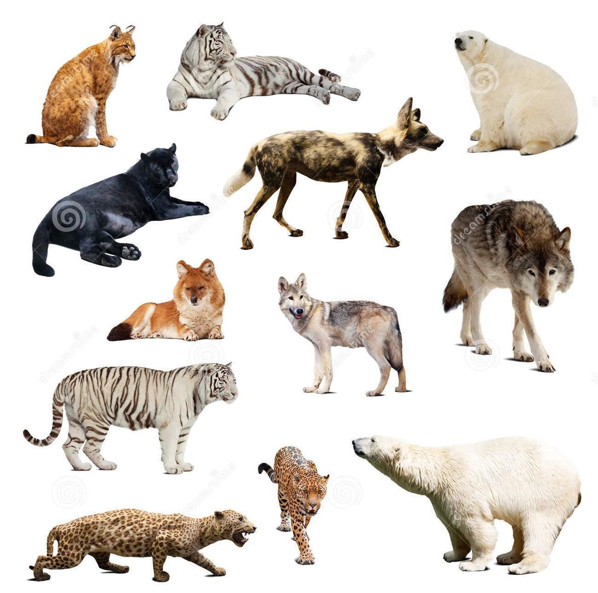
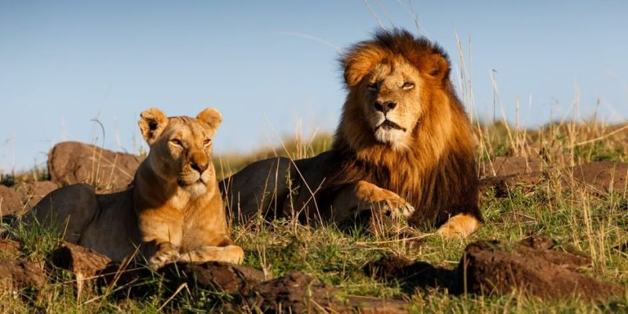
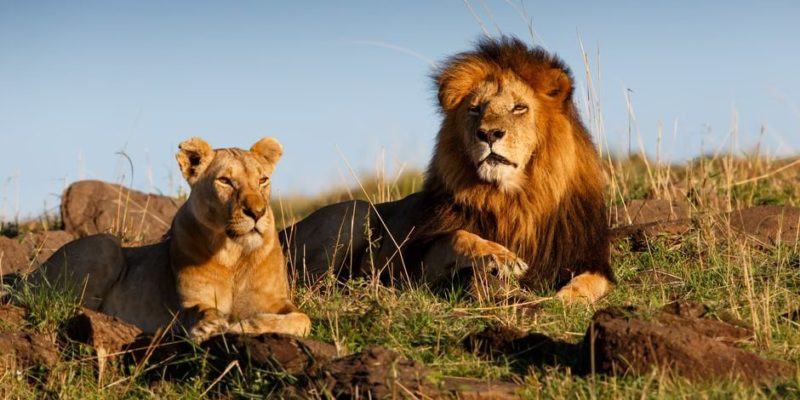

Los mamíferos son una clase de animales vertebrados amniotas homeotermos (de sangre caliente) que poseen glándulas mamarias productoras de leche con las que alimentan a las crías. La mayoría son vivíparos. Se trata de un taxón monofilético; es decir, todos descienden de un antepasado común que se remonta probablemente a finales del Triásico, hace más de 200 millones de años.
El león es un mamífero carnívoro de la familia de los félidos y una de las cinco especies del género Panthera. Los leones salvajes viven en poblaciones cada vez más dispersas y fragmentadas del África subsahariana y una pequeña zona del noroeste de India, habiendo desaparecido del resto de Asia del Sur, Asia Occidental, África del Norte y la península balcánica en tiempos históricos.
 

El lobo es una especie de mamífero placentario del orden de los carnívoros. El perro doméstico se consideraba miembro de la misma especie según distintos indicios, la secuencia del ADN y otros estudios genéticos. Sin embargo, fue hasta 1758 que se consideró una especie distinta por el biólogo Carl Linneaus en la décima edición de Systema naturæ. El primer registro fósil data de hace ochocientos mil años. Antaño los lobos fueron abundantes y se distribuían por Norteamérica y Eurasia. No obstante, por una serie de razones relacionadas con el hombre, los lobos habitan únicamente en una muy limitada porción del que antes fue su territorio.
Una manera de acercarnos a la naturaleza y, mas precisamente a la fauna, es a traves del recorrido de los hermosos lugares que presenta nuestro pais. Una posibilidad para lograr esto es conociendo las distintas opciones que nos ofrecen las empresas de turismo. Una de ellas,y muy importante es "Pedraza Viajes y Turismo SA".
Enviar un WhatsApp